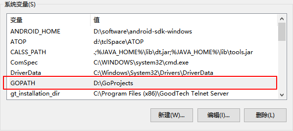
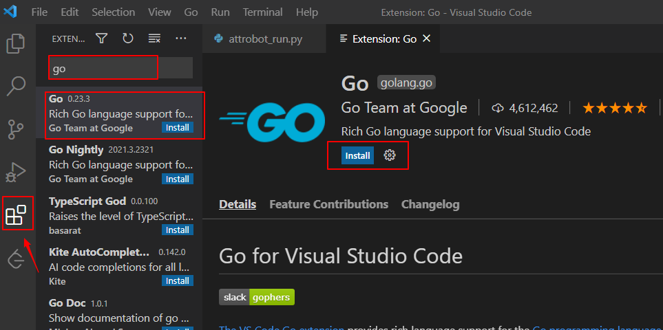
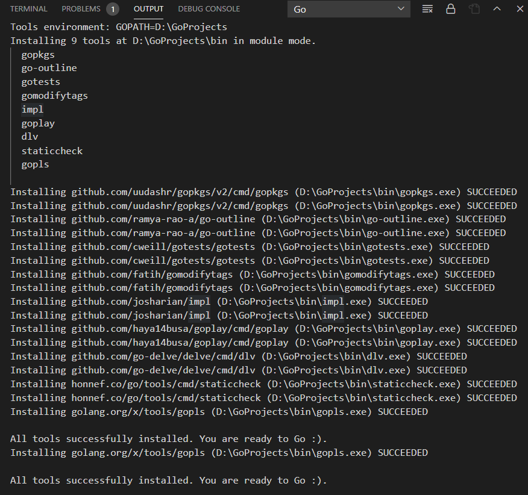
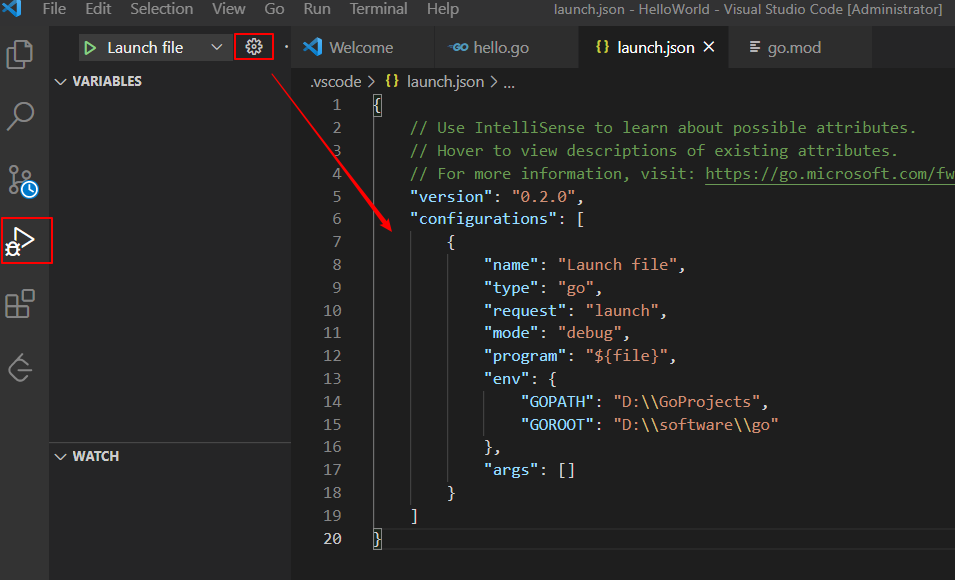

Go语言（Golang） 由Google 的 Robert Griesemer，Rob Pike 和 Ken Thompson 推出，Go语言具有并发性，可以快速编译机器码，自动垃圾回收，是一种静态强类型、编译型语言。由于Go语言的并发特性，非常适用于Web 服务器、分布式集群计算、云计算、游戏服务端等的开发。在区块链（如以太坊，Ethereum）、容器（如Kubernetes）领域都有广泛的应用。本文介绍Go语言开发环境安装方法。
安装
Go支持支持windows、linux、mac操作系统，下面介绍Windows系统安装方法：
下载地址：https://golang.google.cn/doc/install
go国内镜像下载地址：https://gomirrors.org/
双击msi文件安装，安装成功后会自动加入环境变量，测试是否安装成功：go version
windows打开cmd1
2C:\Users\10287>go version
go version go1.15.6 windows/amd64
帮助命令：1
$ go help
Linux系统安装：
下载安装包，使用root用户执行：
1 | $ rm -rf /usr/local/go && tar -C /usr/local -xzf go1.16.6.linux-amd64.tar.gz |
将/usr/local/go/bin添加到环境变量：vim /etc/profile
1 | PATH=$PATH:/usr/local/go/bin |
1 | source /etc/profile |
Go代码编写运行
项目目录结构
配置一个变量名为GOPATH的系统变量 ，值为Go 项目的工作目录，可以是多个路径。

在工作目录D:\GoProjects下创建 bin、pkg、src三个目录
- bin：存放编译后可执行的文件。
- pkg：存放编译后的应用包。
- src：存放应用源代码。
还有一个环境变量叫GOROOT，是Go的安装路径，这个可以不用配置，默认添加到了环境变量
在src目录下新建一个HelloWorld的项目，新建hello.go，项目目录树如下：1
2
3
4
5
6
7D:\GOPROJECTS
│
├─bin
├─pkg
└─src
└─HelloWorld
hello.go
编写代码如下：1
2
3
4
5
6package main
import "fmt"
func main() {
fmt.Println("Hello, World!")
}
HelloWorld目录下运行：1
2$ go run hello.go
Hello, World!
go modules依赖管理
Go mod是Go语言依赖库管理器，官方推荐使用这种方法来管理依赖，相比GOPATH方法更加灵活，记录和解析对其他模块的依赖性。
Go mod是go1.11之后新增的功能，版本至少需要1.11。
打开Go mod，在windows cmd窗口输入如下命令设置环境变量：1
$ setx GO111MODULE on
GO111MODULE=on 表示开启模块支持，忽略 GOPATH 文件夹，根据 go.mod 下载依赖。由于国内网络问题可能无法下载go依赖包，需配置一下国内代理（七牛云提供）：1
$ setx GOPROXY https://goproxy.cn,direct
或者直接手动添加环境变量
下面使用go mod来管理一个项目：
初始化项目
项目src目录下创建的项目目录，执行如下命令：
1 | $ go mod init |
目录下会生成一个go.mod文件：1
2
3module HelloWorld
go 1.16
还有一个比较常用的命令是go mod tidy，用于安装需要的依赖包，删除多余的包。
运行方式
Go是一种编译型语言，代码编写完成后，需要先进行编译后再执行。
1、go run
编译+执行，不生成其它任何文件
1 | $ go run hello.go |
2、go build
先编译，再手动执行
-a：强制编译，目标代码包和依赖的代码包（包括标准库中的代码包）都会被编译-x：会打印执行日志-n：只查看具体操作而不执行它们-v：可以看到go build命令编译的代码包的名称
1 | $ go build hello.go |
执行go build hello.go后，在windows系统上会自动生成一个后缀为exe的可执行文件，可使用-o参数指定编译文件名：1
2
3$ go build -o hello hello.go
$ hello
Hello, World!
3、go install
先编译，将编译好的可执行文件移动到 $GOPATH/bin目录下，将包文件放到pkg目录下。
1 | $ go install hello.go |
4、go clean
清除执行 go 命令而遗留下来的临时目录和文件
-i参数：清除通过go install命令生成的文件，也就是会把bin和pkg目录下的相关文件清除-cache参数：清除go build命令生成的文件-n参数：打印要执行的清除命令，不执行清除-x参数：打印要执行的清除命令，执行清除
1 | $ go clean -i hello.go |
Go 源码安装：go get
go get会自动从代码仓库（比如 GitHub.com、golang.org等）下载目标代码包，安装的路径为设置的环境变量GOPATH中。下面介绍几个常用参数：
-u：下载并安装代码包，不论工作区中是否已存在它们。-d：只下载代码包，不安装代码包。-fix：在下载代码包后先运行一个用于根据当前 Go 语言版本修正代码的工具，然后再安装代码包。-t：同时下载测试所需的代码包。-insecure：允许通过非安全的网络协议下载和安装代码包。比如HTTP。
更多go get命令使用方法可参考：https://github.com/hyper0x/go_command_tutorial/blob/master/0.3.md
其它go命令详细文档可参考Go 语言官方文档：https://golang.google.cn/cmd/go/
开发环境
VSCode
VSCode比较轻量级，是我比较常用的代码开发工具。
1、配置代理
按照前面的方法配置
2、安装go插件
以管理员身份启动VSCode，然后安装go插件

3、安装环境依赖
VSCode打开前面创建的HelloWorld项目，打开hello.go，右下角会提示安装环境依赖，点击安装就行

4、配置调试功能
配置launch.json文件：
1 | { |

配置完成后在go代码文件内，按F5即可进入调试状态。
GoLand
也可以使用 JetBrains 公司推出的GoLand开发，功能更全面，下载地址：https://www.jetbrains.com/go/
学习资源
golang国内站点：https://golang.google.cn/
文档：https://golang.google.cn/doc/
Go语言规范文档：https://golang.google.cn/ref/spec
go语言中文网：https://studygolang.com/
本文标题:Go语言开发环境安装
文章作者:hiyo
文章链接:https://hiyongz.github.io/posts/golang-notes-for-install-guide/
许可协议:本博客文章除特别声明外，均采用CC BY-NC-ND 4.0 许可协议。转载请保留原文链接及作者。